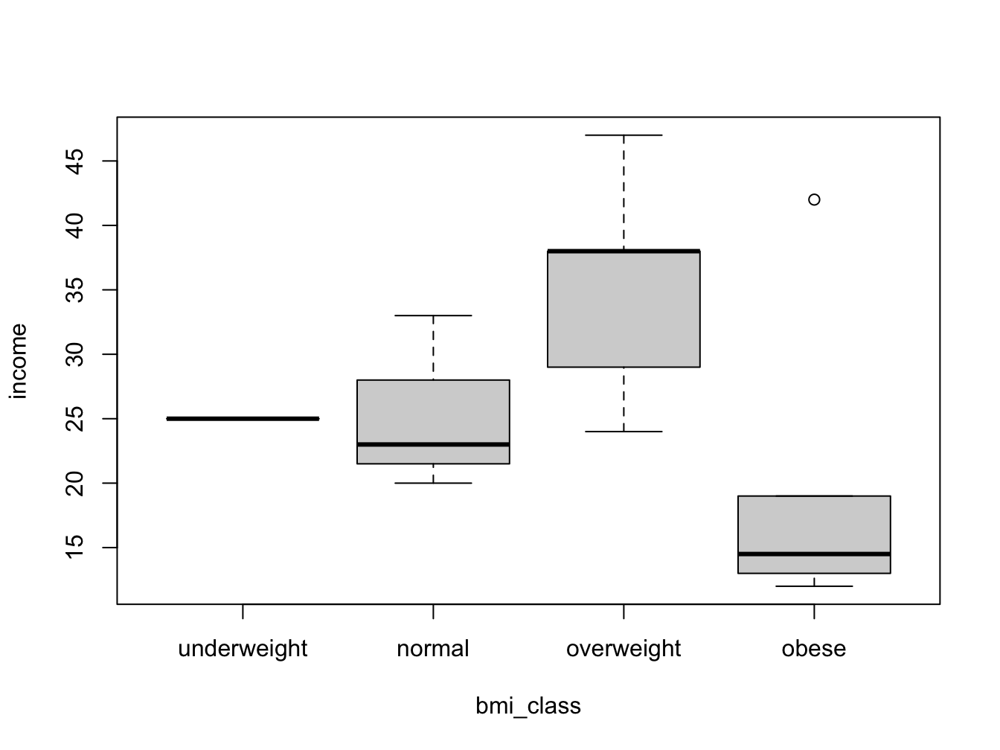

Chapter 6 Functions
6.1 Dealing with NAs
Dealing with NA is a very big thing. When you work with external data there is always the possibility that some values will be missing.
You should be aware that it is not possible to test for NA values (Not Available) values in any other way; using == will simply return NA:
x <- NA
x == NA## [1] NAOther important functions for dealing with that are na.omit() and complete.cases(). Besides that, many functions in R have a (variant of) the na.rm = argument. For instance, when the sum() function encounters an NA in its input vector, it will always return NA:
x <- c(1, 2, 3, NA)
sum(x)## [1] NAsum(x, na.rm = TRUE)## [1] 66.2 Descriptive statistics
R provides a wealth of descriptive statistics functions. The most important ones of them are listed below. The ones with an asterisk are described in more detail in following paragraphs.
| function | purpose |
|---|---|
mean( ) |
mean |
median( ) |
median |
min( ) |
minimum |
max( ) |
maximum |
range( ) |
min and max |
var( ) |
variance s^2 |
sd( ) |
standard deviation s |
summary( ) |
6-number summary |
quantile( ) * |
quantiles |
IQR( ) * |
interquantile range |
The quantile() function
This function gives the data values corresponding to the specified quantiles. The function defaults to the quantiles 0% 25% 50% 75% 100%: these are the quartiles of course.
quantile(ChickWeight$weight)## 0% 25% 50% 75% 100%
## 35.00 63.00 103.00 163.75 373.00quantile(ChickWeight$weight, probs = seq(0, 1, 0.2))## 0% 20% 40% 60% 80% 100%
## 35.0 57.0 85.0 126.0 181.6 373.0Interquantile range IQR()
Function IQR() gives the range between the 25% and 75% quantiles.
IQR(ChickWeight$weight)## [1] 100.75## same as
quantile(ChickWeight$weight)[4] - quantile(ChickWeight$weight)[2]## 75%
## 100.75## same as
diff(quantile(ChickWeight$weight, probs = c(0.25, 0.75)))## 75%
## 100.75boxplot() is summary() visualized
Boxplot is a graph of the 5-number summary, but summary() also gives the mean
summary(ChickWeight$weight)## Min. 1st Qu. Median Mean 3rd Qu. Max.
## 35.0 63.0 103.0 121.8 163.8 373.0boxplot(ChickWeight$weight)6.3 General purpose functions
Memory management
When working with large datasets it may be useful to free some memory once in a while (i.e. intermediate results). Use ls() to see what is in memory; use rm() to delete single or several items: rm(genes), rm(x, y, z) and clear all by typing rm(list = ls())
File system operations
Several functions exist for working with the file system:
getwd()returns the current working directory.setwd(</path/to/folder>)sets the current working directory.dir(),dir(path)lists the contents of the current directory, or ofpath.- A
pathcan be defined as"E:\\emile\\datasets"(Windows) or, on Linux/Mac using relative paths"~/datasets"or absolute paths"/home/emile/datasets".
Glueing character elements: paste()
Use paste() to combine elements into a string
paste(1, 2, 3)## [1] "1 2 3"paste(1, 2, 3, sep="-")## [1] "1-2-3"paste(1:12, month.abb)## [1] "1 Jan" "2 Feb" "3 Mar" "4 Apr" "5 May" "6 Jun" "7 Jul"
## [8] "8 Aug" "9 Sep" "10 Oct" "11 Nov" "12 Dec"There is a variant, paste0() which uses no separator by default.
A local namespace: with()
When you have a piece of related code operating on a single dataset, use with() so you don’t have to type its name all the time.
with(airquality, {
mdl <- lm(Solar.R ~ Temp)
plot(Solar.R ~ Temp)
abline(mdl)
})Local variables such as mdl will not end up in the global environment.
6.4 Convert numeric vector to factor: cut()
Sometimes it is useful to work with a factor instead of a numeric vector. For instance, when working with a Body Mass Index (bmi) variable it may be nice to split this into a factor for some analyses.
The function cut() is used for this.
Suppose you have the following fictitious dataset
## body mass index
bmi <- c(22, 32, 21, 37, 28, 34, 26, 29,
41, 18, 22, 27, 32, 31, 26)
## year income * 1000 euros
income <- c(23, 14, 20, 13, 47, 15, 38, 29,
12, 25, 33, 24, 19, 42, 38)
my_data <- data.frame(bmi = bmi, income = income)You can of course look at income as a function of bmi using a scatter plot:
with(my_data, plot(income ~ bmi))But wouldn’t it be nice to look at the bmi categories as defined by the WHO? To be able to do this, you need to split the numeric bmi variable into a factor using cut().
my_data$bmi_class <- cut(bmi,
breaks = c(0, 18.5, 25.0, 30.0, Inf),
right = F,
labels = c("underweight", "normal", "overweight", "obese"),
ordered_result = T)
with(my_data, boxplot(income ~ bmi_class))
The breaks = argument specifies the split positions; the right = F arguments specifies that the interval is inclusive on the lower (left) boundary:
x <- c(2, 5, 10)
cut(x, breaks = c(0, 2, 5, 10), right = F)## [1] [2,5) [5,10) <NA>
## Levels: [0,2) [2,5) [5,10)cut(x, breaks = c(0, 2, 5, 10), right = T)## [1] (0,2] (2,5] (5,10]
## Levels: (0,2] (2,5] (5,10]An interval written as (5,10] means it is from -but excluding- 5 to -but including- 10.
Note that in the first example the last value (10) becomes NA because 10 is exclusive in that interval specification.
6.5 File I/O revisited
Whatever the contents of a file, you always need to address (some of) these questions:
- Are there comment lines at the top?
- Is there a header line with column names?
- What is the column separator?
- Are there quotes around character data?
- How are missing values encoded?
- How are numeric values encoded?
- Are there dates (a special challenge)
- What is the type in each column?
- character / numeric / factor / date-time
Some read.table() arguments
| arg | specifies | example |
|---|---|---|
| sep | field separator | sep = “:” |
| header | is there a header | header = F |
| dec | decimal format | dec = “,” |
| comment.char | comment line start | comment.char = "" |
| na.strings | NA value | na.strings = “-” |
| as.is | load as character | as.is = c(1,4) |
| stringsAsFactors | load strings as factors | stringsAsFactors = F |
The data reading workflow
Always apply this sequence of steps and repeat until you are satisfied with the result:
read.table()with arguments that seem OK- Check the result at least with
str()andhead()and verify that the columns have the correct data type.- Factors where numeric expected indicate missed “NA” values!
- Adjust the read.table parameters
- Rinse and repeat
Writing data to file
To write a data frame, matrix or vector to file, use write.table(myData, file="file.csv"). Standard is a comma-separated file with both column- and row names, unless otherwise specified:
col.names = Frow.names = Fsep = ";"sep = "\t" # tab-separated
Saving R objects to file
Use the save() function to write R objects to file for later use.
This is especially handy with intermediate results in long-running analysis workflows.
x <- stats::runif(20)
y <- list(a = 1, b = TRUE, c = "oops")
save(x, y, file = "xy.RData")Writing a plot to file
Use one of the functions png(), jpeg(), tiff(), or bmp() for these specific file types. They have widely differing properties, especially with respect to file size.
Use width and height to specify size. Default unit is pixels. Use other unit: units = "mm"
png("/path/to/your/file.png",
width = 700, height = 350, units = "mm")
plot(cars)
dev.off() # don't forget this one!6.6 Pattern matching
Pattern matching is the process of finding, locating, extracting and replacing patterns in character data that usually cannot be literally described.
For instance, it is easy enough to look for the word “Chimpanzee” in a vector containing animal species names:
animals = c("Chimpanzee", "Cow", "Camel")
animals == "Chimpanzee"## [1] TRUE FALSE FALSEbut what are you going to do if there are multiple variants of the word you are looking for? This?
animals = c("Chimpanzee", "Chimp", "chimpanzee", "Camel")
animals == "Chimpanzee" | animals == "Chimp" | animals == "chimpanzee"## [1] TRUE TRUE TRUE FALSEThe solution here is not using literals, but to describe patterns.
Look at the above example. How would you describe a pattern that would correctly identify all Chimpanzee occurrences?
Is you pattern something like this?
A letter C in upper-or lower case followed by ‘himp’ followed by nothing or ‘anzee’
In programming we use regular expressions or RegEx to describe such a pattern in a formal concise way:
[Cc]himp(anzee)?
And to apply such a pattern in R, we use one of several functions dedicated for this task. Here is one, grepl(), which returns TRUE if the regex matched the vector element.
grepl("[Cc]himp(anzee)?", animals)## [1] TRUE TRUE TRUE FALSEFunctions using regex
There are several functions dedicated to finding patters in character data. They differ in intent and output. Here is a listing.
- finding Does an element contain a pattern (TRUE/FALSE)?
grepl(pattern, string) - locating Which elements contain a pattern (INDEX)?
grep(pattern, string) - extracting Get the content of matching elements
grep(pattern, string, value = TRUE) - replace Replace the first occurrence of the pattern
sub(pattern, replacement, string) - replace all Replace all occurrences of the pattern
gsub(pattern, replacement, string)
Note that the stringr package from the tidyverse has many user-friendly functions in this field as well. Two of them will be dealt with in the exercises.
6.6.1 Regex syntax
A regular expression can be build out of any combination of
- character sequences - Literal character sequences such as ‘chimp’
- character classes - A listing of possibilities for a single position.
- Between brackets:
[adgk]means ‘a’ or ‘d’ or ‘g’ or ‘k’. - Use a hyphen to create a series:
[3-9]means digits 3 through 9 and[a-zA-Z]means all alphabet characters. - Negate using
^.[^adgk]means anything but a, d, g or k. - A special case is the dot
.: any character matches.
- Many special character classes exist (digits, whitespaces etc). They are discussed in a later paragraph.
- Between brackets:
- alternatives - Are defined by the pipe symbol
|: “OR”
- quantifiers - How many times the preceding block should occur. See next paragraph.
- anchors -
^means matching at the start of a string.$means at the end.
An excellent cheat sheet from the RStudio website is also included here
6.6.2 Quantifiers
Use quantifiers to specify how many times a character or series of characters should occur.
{n}: exactlyntimes{n, }: at leastntimes{ ,n}: at mostntimes{n, m}: at leastnand at mostmtimes.*: 0 or more times; same as{0, }+: 1 or more times; same as{1, }?: 0 or 1 time; same as{0, 1}
6.6.3 Some examples
Restriction enzymes
This is the recognition sequence for the HincII restriction endonuclease:
5'-GTYRAC-3'
3'-CARYTG-5'Before reading on: how would you define a regular expression that is precisely describes this recognition sequence?
Molecular biology sequence ambiguity codes can be found here
HincII_rs <- "GT[CT][AG]AC"
sequences <- c("GTCAAC",
"GTCGAC",
"GTTGAC",
"aGTTAACa",
"GTGCAC")
grep(pattern = HincII_rs, x = sequences, value = TRUE)## [1] "GTCAAC" "GTCGAC" "GTTGAC" "aGTTAACa"Dutch dates
Here are some Dutch dates, in different accepted formats. The last two are not a correct notation. Create a RegEx that will determine whether an element contains a Dutch date string.
dates <- c("15/2/2019", "15-2-2019", "15-02-2019", "015/2/20191", "15/2/20191")
dateRegex <- "[0-9]{2}[/-][0-9]{1,2}[/-][0-9]{4}"
grep(pattern = dateRegex, x = dates, value = TRUE)## [1] "15/2/2019" "15-2-2019" "15-02-2019" "015/2/20191" "15/2/20191"Why were the last two matched?
Because the pattern is there, albeit embedded in a longer string.
We have to anchor the pattern to be more specific.
6.6.4 Anchoring
Using anchoring, you can make sure the string is not longer than you explicitly state:
dates <- c("15/2/2019", "15-2-2019", "15-02-2019", "015/2/20191", "15/2/20191")
dateRegex <- "^[0-9]{2}[/-][0-9]{1,2}[/-][0-9]{4}$"
grep(pattern = dateRegex, x = dates, value = TRUE)## [1] "15/2/2019" "15-2-2019" "15-02-2019"Now the date matching is correct.
6.6.5 Metacharacters: Special character classes
Since patterns such as [0-9] occur so frequently, they have dedicated character classes such as [[:digit:]]. The most important other ones are
- digits
[[:digit:]]or\\d: equivalent to[0-9] - alphabet characters
[[:alpha:]]: equivalent to[a-zA-Z] - lowercase characters
[[:lower:]]: equivalent to[a-z] - uppercase characters
[[:upper:]]: equivalent to[A-Z] - whitespace characters
[[:space:]]or\\s: Space, tab, vertical tab, newline, form feed, carriage return - punctuation characters
[[:punct:]]: One of !"#$%&’()*+,-./:;<=>?@[]^_`{|}~
(have a look at the cheat sheet for all)
Here is the same example, this time using these predefined character classes
dates <- c("15/2/2019", "15-2-2019", "15-02-2019", "15022019", "15/2/20191")
dateRegex <- "[[:digit:]]{2}[/-]\\d{1,2}[/-]\\d{4}"
grep(pattern = dateRegex, x = dates, value = TRUE)## [1] "15/2/2019" "15-2-2019" "15-02-2019" "15/2/20191"Postal codes
Here are some Dutch zip (postal) codes, in different accepted formats. The last two are not a correct notation. Can you create a RegEx that will determine whether an element contains a Dutch zip code?
zips <- c("1234 AA", "2345-BB", "3456CC", "4567 dd", "56789aa", "6789a_")
zips## [1] "1234 AA" "2345-BB" "3456CC" "4567 dd" "56789aa" "6789a_"Prosite patterns
Prosite is a database of amino acid sequence motifs. One of them is the Histidine Triad profile (PDOC00694).
[NQAR]-x(4)-[GSAVY]-x-[QFLPA]-x-[LIVMY]-x-[HWYRQ]-
[LIVMFYST]-H-[LIVMFT]-H-[LIVMF]-[LIVMFPT]-[PSGAWN]- Write this down as a RegEx
- Was that efficient? Using the
gsub()function, can you convert it in a RegEx using code? It may take several iterations. Was that efficient?
- Next, use an appropriate function to find if, and where, this pattern is located within the sequences in file
data/hit_proteins.txt(here)
Amino Acid codes and Prosite pattern encoding can be found here
6.6.6 Locating and Extracting
This is outside the scope of this first acquaintance. The stringr package from the tidyverse is much better at this than the base R functions. One of the exercises introduces this topic for the eager ones among you.